Front Drive Shaft (Engine Type 2AZ-FE) Disassembly |
| 1. Front Axle Inboard Joint Boot Clamp LH NO.2 Disconnection |
 |
For one-touch clamp type
Using a thin-bladed screwdriver, release the staking of the inboard joint boot clamp No.2.
Disconnect the inboard joint boot clamp No.2 from the inboard joint boot.
 |
For hook type clamp
Using pliers, release the hook portion of the inboard joint boot clamp No.2.
Disconnect the inboard joint boot clamp No.2 from the inboard joint boot.
| 2. Front Axle Inboard Joint Boot Clamp RH NO.2 Disconnection |
| 3. Front Axle Inboard Joint Boot Clamp LH Removal |
 |
For one-touch clamp type
Using a screwdriver, release the staking of the inboard joint boot clamp and disconnect the inboard joint boot clamp.
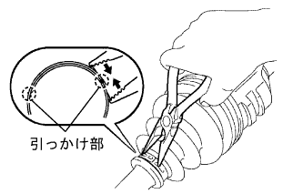 |
For hook type
Using needle-nose pliers, release the hook portion and remove the clamp.
| 4. Front Axle Inboard Joint Boot Clamp RH Disconnection |
| 5. Drive Shaft Inboard Joint Boot Disconnection |
Disconnect the inboard joint boot from the inboard joint assembly.
| 6. Front Drive Inboard Joint Assembly LH Removal |
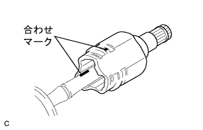 |
Put matchmarks on the inboard joint assembly LH and outboard joint shaft assembly.
Remove the inboard joint assembly LH from the outboard joint shaft assembly.
Secure the outboard joint shaft assembly in a vise between aluminum plates.
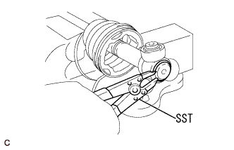 |
Using SST, remove the shaft snap ring.
 |
Put matchmarks on the tripod joint and outboard joint shaft assembly.
Using a brass bar and hammer, remove the tripod joint assembly.
Remove the inboard joint boot clamp No.2, inboard joint boot and inboard joint boot clamp.
| 7. Front Drive Inboard Joint Assembly RH Removal |
| 8. Front Drive Shaft Damper Clamp LH Disconnection |
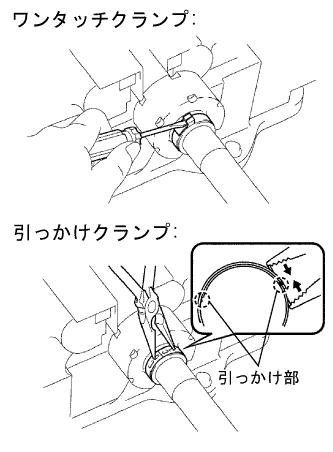 |
For one-touch clamp type
Using a thin-bladed screwdriver, release the staking of the damper clamp.
Disconnect the damper clamp from the drive shaft damper.
For hook type clamp
Using pliers, release the hook portion of the damper clamp.
Disconnect the damper clamp from the drive shaft damper.
| 9. Front Drive Shaft Damper Clamp RH Disconnection (Drive Type 4WD) |
| 10. Front Drive Shaft Damper LH Removal |
Remove the drive shaft damper from the outboard joint shaft assembly.
| 11. Front Drive Shaft Damper RH Removal (Drive Type 4WD) |
| 12. Front Axle Outboard Joint Boot Clamp LH NO.2 Disconnection |
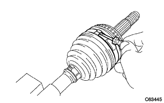 |
Using a thin-bladed screwdriver, release the staking of the outboard joint boot clamp No.2.
Disconnect the outboard joint boot clamp No.2 from the outboard joint boot.
| 13. Front Axle Outboard Joint Boot Clamp RH NO.2 Disconnection |
| 14. Front Axle Outboard Joint Boot Clamp LH Disconnection |
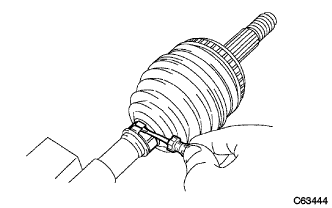 |
Using a screwdriver, remove the outboard joint boot clamp.
| 15. Front Axle Outboard Joint Boot Clamp RH Disconnection |
| 16. Drive Shaft Outboard Joint Boot Removal |
Remove the outboard joint boot, outboard joint boot clamp No.2 and outboard joint boot clamp from the outboard joint shaft assembly.
Remove the grease from the outboard joint.
| 17. Front Drive Shaft Hole Snap Ring LH Removal |
 |
Using a screwdriver, remove the hole snap ring.
| 18. Front Drive Shaft Dust Cover LH Removal |
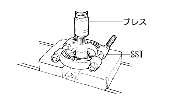 |
Using SST and a press, remove the dust cover.
| 19. Front Drive Shaft Dust Cover RH Removal |
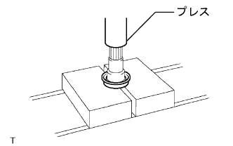 |
Using a press, remove the dust cover RH.
| 20. Drive Shaft Bearing Case Sub-assembly Removal (Drive Type FF) |
Secure the bearing case in a vise between aluminum plates.
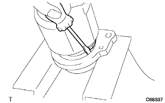 |
Using a screwdriver, remove the bearing case snap ring from the bracket.
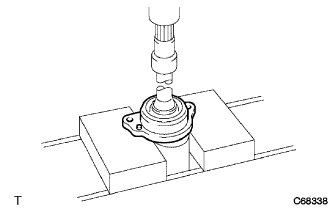 |
Using a press, remove the bearing case.
| 21. Front Drive Shaft Dust Cover Removal (Drive Type FF) |
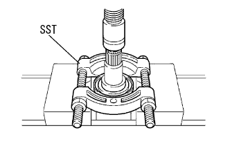 |
Using SST and a press, remove the dust cover.
| 22. Front Drive Shaft Bearing Removal (Drive Type FF) |
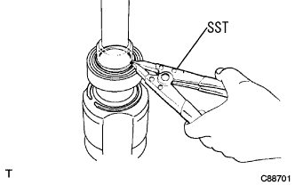 |
Using SST, remove the snap ring.
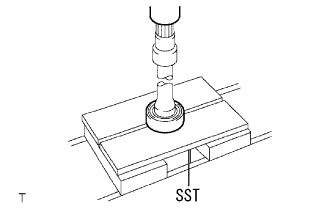 |
Using SST and a press, remove the bearing from the inboard joint RH.
Remove the bearing case snap ring from the inboard joint.
| 23. Front Drive Shaft Bearing Removal (Drive Type 4WD) |
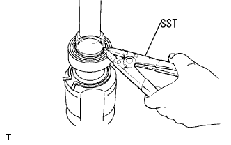 |
Using SST, remove the snap ring.
Using SST and a press, remove the bearing from the inboard joint RH.
Remove the bearing bracket hole snap ring from the inboard joint.